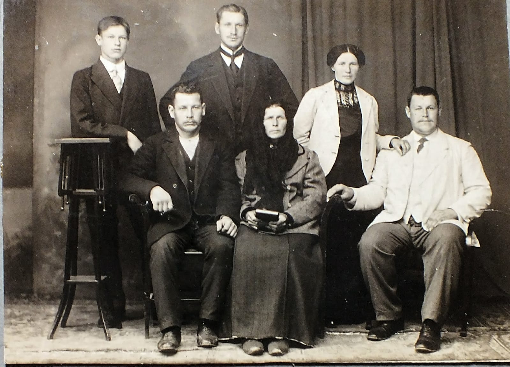
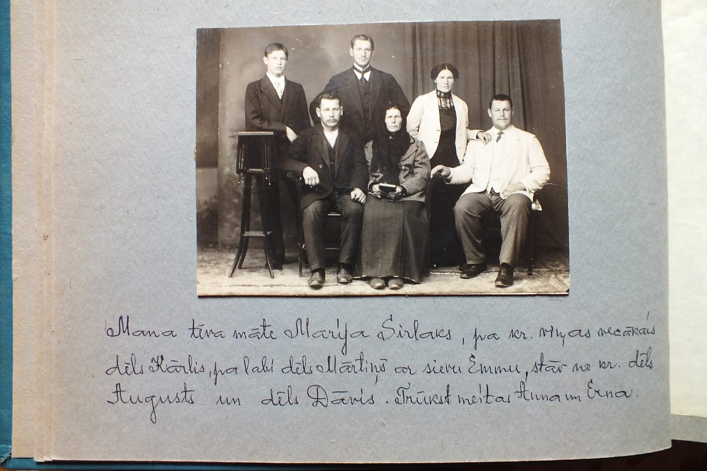

Kārlis Sirlaks 1881–1957
Peter's great-great-uncle.
Kārlis Sirlaks was born on 5 Mar 1881 in Vīstuči farm, Jaunrauna, Rauna, Cēsis district, Vidzeme, Latvia1,2, the son of Pēteris Sirlaks and Marija Gibboja1,9. He married Alvīne Sirlaka10. He died on 6 Feb 1957 in Rauna, Cēsis district, Vidzeme, Latvia (according to an online family tree)5 and was buried at Rauna, Cēsis district, Vidzeme, Latvia6,7.
Family
- Parents
- Pēteris Sirlaks 1847–1896 and Marija Gibboja 1853–1925 documented
- Wife
- Alvīne Sirlaka 1886–1968 · married
- Children
- Ausma Sirlaka b. 1920 probable
- Skaidrīte Sirlaka 1922–1988 probable
Life events
| Event | Date | Place and details |
|---|---|---|
| Born | 5 Mar 1881 | Vīstuči farm, Jaunrauna, Rauna, Cēsis district, Vidzeme, Latvia Old Style (Julian) date: 21 Feb 18811,2 |
| Baptised | 8 Mar 1881 | Rauna, Cēsis district, Vidzeme, Latvia Old Style (Julian) date: 24 Feb 18813 |
| Died | 6 Feb 1957 | Rauna, Cēsis district, Vidzeme, Latvia According to an online family tree5 |
| Work | Cēsis, Cēsis district, Vidzeme, Latvia Lived in Cēsis in a flat in the courtyard house on Pils iela ("Mūsu tēva brālis Kārlis dzīvoja Cēsīs Pils ielas sētas mājas jaukā dzīvoklī").4 | |
| Buried | Rauna, Cēsis district, Vidzeme, Latvia6,7 | |
| Note | LEAD (S): Four NEW children of Pēteris Sirlaks and Marija Gibboy (aunts/uncles of Elvīra). Find their baptisms.8 |
Photographs


Open questions
Sources
- Ainas Sirlakas atmiņas ("Vīstuči"), Aina Jurciņa née Sirlaka, Priekuļi, 1998, p. 7, section "PĒTERA MĀRČA DĒLA ĢIMENE".
Kārlis 1881.21.II … Visi dzimuši “Vīstučos”.
Translation: Kārlis, 21 February 1881 … All born at "Vīstuči".
parents: Pēteris Sirlaks and Marija Gibboy (3rd child). = 5 March 1881 Gregorian. NEW PERSON. As printed in the memoir; a 19th-century church-book date, so almost certainly Julian (Old Style).
- MyHeritage family tree 'Dzimta' of Peter's third cousin (his family site), member GEDCOM export of 26 Oct 2026, I66 (person-6000066), GEDCOM lines 2637–2677.
BIRT · 21 FEB 1881 · Jaunrauna
Date: Julian (Old Style), as in the church books: = 5 Mar 1881 (Gregorian), as we have it.
- 1881 baptism no. 53, Kahrl Sirlak, LVVA f. 235, apr. 7, l. 517, image 143 (right page), LVVA f. 235, apr. 7, l. 517, image 143.
Kahrl … geb. 21. Febr., get. 24. Febr. … Kahrl Weidenbaum [godparent column]
Translation: Kahrl … born 21 Feb, baptised 24 Feb … [godparent] Kahrl Weidenbaum
born 1881-02-21; father Peter Sirlak [?]; godfather incl. Jahn [?] Kahrl Weidenbaum; register no. 53 of 1881
- Ainas Sirlakas atmiņas ("Vīstuči"), Aina Jurciņa née Sirlaka, Priekuļi, 1998, p. 8, section "PAR PĒTERA UN MARIJAS TREŠO BĒRNU KĀRLI".
Kārļa specialitāte- mūrnieks. Būvējis arī Raunas biedrības māju.
Translation: Kārlis’s trade: bricklayer/mason. He also built the Rauna Society house.
Lived in Cēsis in a flat in the courtyard house on Pils iela ("Mūsu tēva brālis Kārlis dzīvoja Cēsīs Pils ielas sētas mājas jaukā dzīvoklī").
- MyHeritage family tree 'Dzimta' of Peter's third cousin (his family site), member GEDCOM export of 26 Oct 2026, I66 (person-6000066), GEDCOM lines 2637–2677.
DEAT · 6 FEB 1957 · Rauna · AGE 75
- Ainas Sirlakas atmiņas ("Vīstuči"), Aina Jurciņa née Sirlaka, Priekuļi, 1998, p. 6, section "PA SENČU PĒDĀM".
Kādēļ turpat vēlāk Dāvja brālis Kārlis?
Translation: Why later Dāvis’s brother Kārlis in the same place [Rauna cemetery]?
Buried at Rauna cemetery, near his sister Natālija; date not given.
- MyHeritage family tree 'Dzimta' of Peter's third cousin (his family site), member GEDCOM export of 26 Oct 2026, I66 (person-6000066), GEDCOM lines 2637–2677.
BURI · Raunas kapi
- Ainas Sirlakas atmiņas ("Vīstuči"), Aina Jurciņa née Sirlaka, Priekuļi, 1998, p. 7, section "PĒTERA MĀRČA DĒLA ĢIMENE".
Ernestīne 1879.9.III … Kārlis 1881.21.II … Kristīne 1888.9.IV … Augusts 1895.30.V
Translation: Ernestīne 9.III.1879 … Kārlis 21.II.1881 … Kristīne 9.IV.1888 … Augusts 30.V.1895
LEAD (S): Four NEW children of Pēteris Sirlaks and Marija Gibboy (aunts/uncles of Elvīra). Find their baptisms.
- Studio portrait of Marija Sirlaka (née Gibboja) with her sons Kārlis, Mārtiņš, Dāvis and Augusts and Mārtiņš's wife Emma, c. 1911–1913; mounted in a family album with a handwritten Latvian caption.
seated left: 'her eldest son Kārlis'
- Ainas Sirlakas atmiņas ("Vīstuči"), Aina Jurciņa née Sirlaka, Priekuļi, 1998, p. 8, section "PAR PĒTERA UN MARIJAS TREŠO BĒRNU KĀRLI".
Viņa sieva tante Alvīne bija apaļa, vienkārša un patīkama.
Translation: His wife, aunt Alvīne, was plump, simple and pleasant.
spouse: Alvīne (maiden name not given). Daughters Ausma and Skaidrīte.